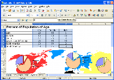

Calc
Il foglio elettronico tuttofare
CALC è il programma per fogli di calcolo che avete sempre desiderato. I nuovi utenti lo troveranno intuitivo e facile da imparare, mentre chi estrae dati per professione e chi svolge calcoli complessi apprezzerà l'ampia gamma di funzioni avanzate.
 La tecnologia avanzata del DataPilot rende semplice l'estrazione di dati grezzi dal database di un'azienda, l'analisi in base a controlli incrociati, il riepilogo e la loro conversione in informazioni significative.
{kind=link}
Le formule in linguaggio naturale vi permettono di creare formule utilizzando le normali parole (per es., "vendite - costi").
Il pulsante di Somma automatica inserisce automaticamente una somma o un subtotale in base al contesto.
Le Procedure guidate vi permettono di scegliere e usare un'ampia gamma di funzioni avanzate all'interno dei fogli elettronici.
L'opzione Stili e formattazione rende semplice l'applicazione di stili flessibili di formattazione alle celle, incluso la rotazione libera del contenuto, i modelli, gli sfondi, i bordi e molto altro. Diventate voi stessi esperti di fogli calcolo grazie ai modelli con funzioni incorporate che permettono di concentrarvi sul vero lavoro da svolgere.
Il gestore degli Scenari consente le analisi di ipotesi al semplice clic di un pulsante, per esempio il confronto degli utili in base a previsioni di vendita alte, medie o basse.
Il Risolutore permette di risolvere con grande semplicità problemi di programmazione lineare, ad esempio trovare il migliore valore da attribuire a vari parametri per massimizzare la produttività della vostra azienda.
Nascondete o mostrate i Temi di disegno con un semplice clic del mouse - usate i temi predefiniti di CALC o quelli personalizzati da voi.
Salvate i vostri documenti nel formato OpenDocument, lo standard internazionale per i documenti di ufficio. Questo formato, basato su XML, è uno standard aperto: ciò significa che non siete legati a CALC. Potete aprire i vostri documenti con qualsiasi programma compatibile con OpenDocument.
Con CALC, inoltre, potete leggere tutti i vostri precedenti documenti Microsoft Excel (compresi quelli creati con Microsoft Excel 2007) e salvare il vostro lavoro nei formati Microsoft Excel per inviarli a chi è ancora legato ai prodotti Microsoft. Se essi desiderano solo vedere il risultato del vostro lavoro, usate piuttosto il formato PDF (Portable Document Format, .pdf) - non è necessario comprare altro software.
Traduzione a cura dei volontari del progetto localizzazione.